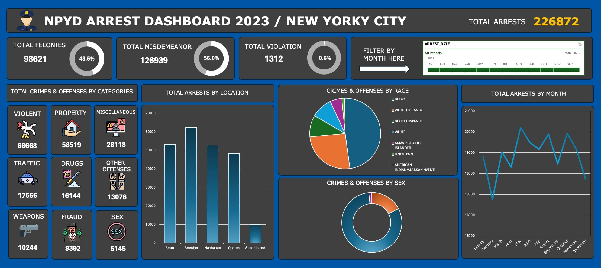
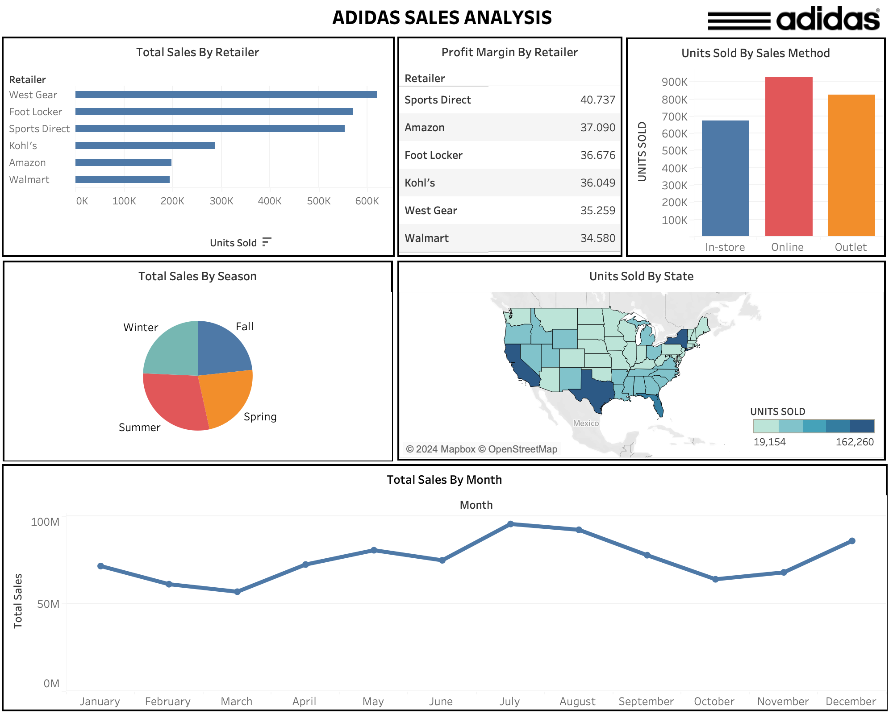

I'm excited to share a project I've been working on, diving deep into the crime data of New York City for the year 2023.
Leveraging the power of data visualization, I've created an interactive dashboard that provides valuable insights into
crime trends and patterns across the city.


Using data from Adidas sales transactions, I conducted a comprehensive analysis to understand sales performance across different states,
retailers, seasons, and sales methods. The goal was to identify trends, patterns, and opportunities to optimize sales strategies.

This project delves into a comprehensive dataset containing records of international soccer games spanning from 1872 to 2023.
The analysis aims to uncover patterns, trends, and key insights, shedding light on the historical landscape of international soccer.